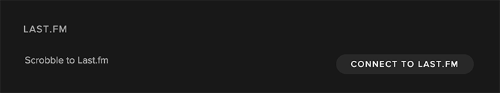

When I started working on my new site, I was trying to come up with unique features that you don't really see on other portfolio sites. I thought it would be cool to allow people to see what song I am currently listening to, or at least the song I have listened to most recently. I am a lover of Spotify and listen to basically all my music on it. I did some digging into their API and found that there isn't a way to get a users most recent song, so I made a workaround, using "scrobbling" and Last.fm.
Getting Set Up
First things first, head on over to Github, download the repo, and add it to your project. Before you can use the plugin, you will need to have Spotify and Last.fm accounts set up, as well as a Last.fm API key. Once you have all that set up, you will need to connect your Last.fm account to your Spotify account. You can do this by opening the desktop application and going to "Preferences". You will see a section with the heading "LAST.FM". Enter your username and password to give Spotify access.

Once you have that done, Spotify will be able to "scrobble" the songs you play to Last.fm. The next step is to use Last.fm's API to get that information. Lucky for you, the plugin handles all that. All you need to do is initialize it. You can do so by using a selector for the container you want the Spotify player to render in.
Something like this will do the trick:
$('.js-current-track').spotify({
width: '100%',
height: 400,
username: 'YOUR_USERNAME',
api_key: 'YOUR_API_KEY'
});
All you need to do is pass in an options object with your desired width and height (optional), as well as your Last.fm username and API key.
That should do it. You should be able to navigate to the page on your site that has the targeted element and see a Spotify player rendered with your most recent Spotify song.
If you ran into any issues, let me know in the comments!